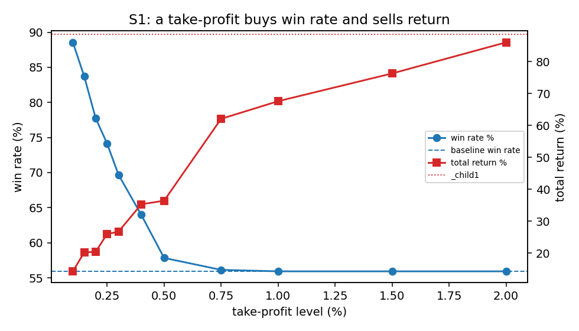
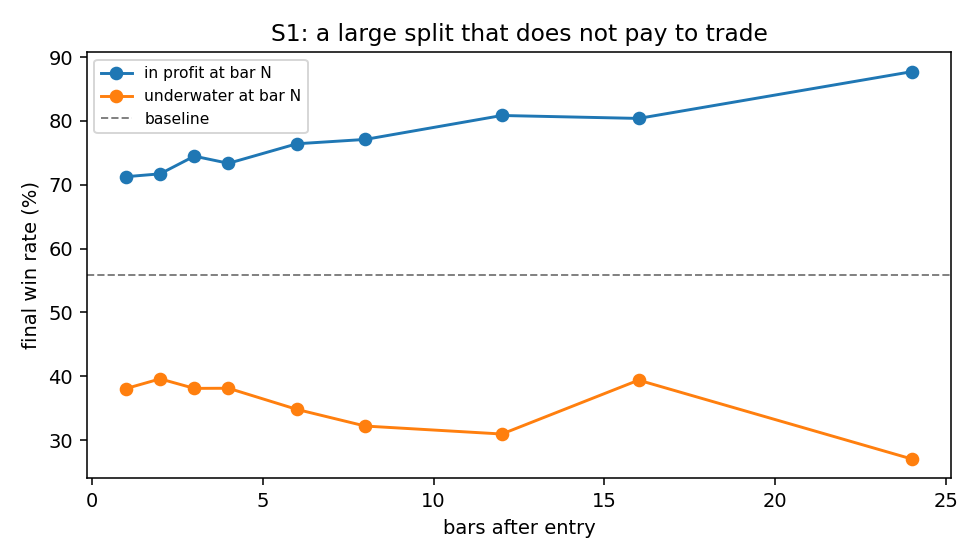
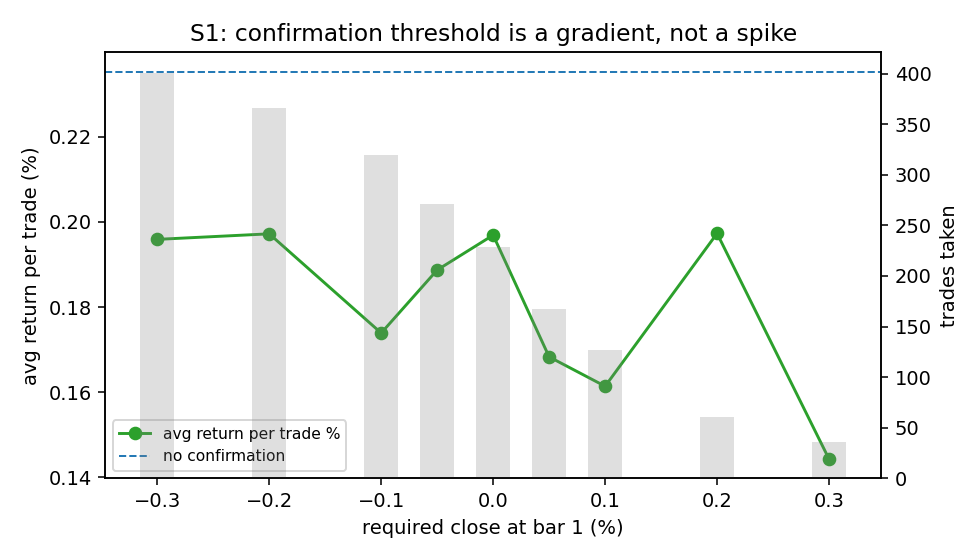
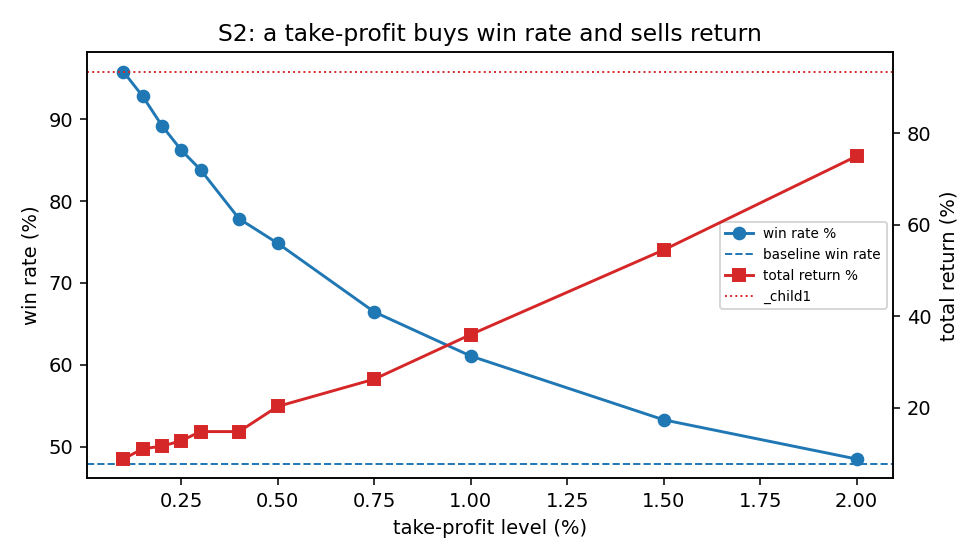
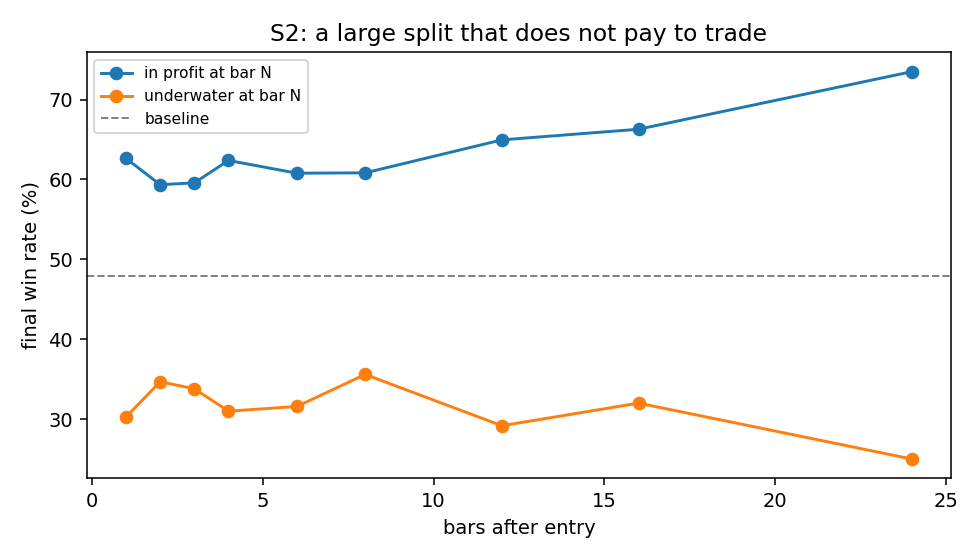
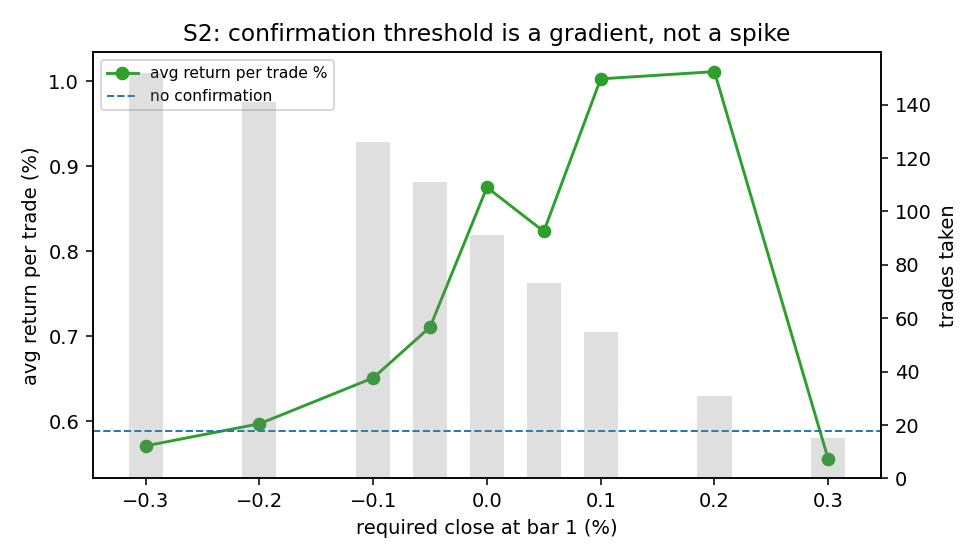

RS-XAUUSD-20260818-001 · XAUUSD · 2026-08-18
S1 V3.9 / S2 V3.2 — trade-path structure: exit-side tuning, and one-bar confirmation entry
先前所有 S1／S2 研究都以交易之外的市場狀態做條件篩選，結果都只找到雜訊。這次改問：交易自己重建出來的路徑，是否藏著策略目前沒用上的東西——停利、更緊的停損、套牢時間出場、移動停損或移到保本，或是等一根 K 棒再確認進場，能不能改善任一策略？如果『確認』真的能挑出比較好的交易，用加碼表達會不會比直接篩選更好？
Headline Metrics 關鍵數字
Key Findings 重點發現
勝率可以用錢買到，但單看勝率毫無意義
全額停利可以把 S1 拉到 88.56%、S2 拉到 95.81%，因為停利在結構上絕不可能把賺錢單變成賠錢單。但兩個策略裡沒有任何一個停利設定改善總報酬：S1 的報酬從 88.62% 掉到 +14% 至 +36% 之間。任何『拉高勝率』的要求，都必須回答『用什麼代價換來的』。
測了五大類出場方式，沒有一種改善報酬
每個策略各測 75 種出場端變體，涵蓋停利、收緊停損、時間出場、移動停損與移到保本。兩個策略都沒有任何一種改善總報酬。表現最好的移動停損仍讓 S1 損失 5.39%、S2 損失 36.28% 的總報酬；把停損移到進場價更糟，S2 在 0.2% 觸發幅度下最多損失 59%。看似正向的設定，其實都落在原本停損的位置或更寬鬆，等同於原本的做法。
第一版報告在測試這一類方法之前，就宣稱出場端已經測完
第一版只測了固定停利、收緊固定停損與時間出場，就下結論說出場端已經沒有空間。這三種都無法在讓獲利單繼續跑的同時、仍能在反轉時停損出場——而這正是移動停損存在的意義，所以原本的結論範圍超過了證據能支持的程度。第二版為每個策略新增 30 種移動停損與保本變體，結論不變，但這次才真正有證據支持。
本研究最大的效應是真實的，但無法拿來交易
進場後一根 K 棒，仍在獲利的 S1 交易最終有 71.26% 賺錢，套牢中的只有 38.07%——在 472 筆交易上差距達 33.19 個百分點，遠超過可解析的門檻，而套牢那組的獲利因子低於1。但提早出掉這些套牢交易，在 24 種設定中有 22 種仍然虧錢，因為放棄掉的反彈比省下的虧損還多。
S2 等一根 K 棒再確認進場，是唯一站得住的候選方法
等一根 K 棒、只在收在獲利時才進場，167 筆 S2 交易中取走 91 筆，勝率 62.64%、獲利因子 2.971，相對於未篩選的 47.9% 與 2.062。隨機挑選同樣數量的延遲交易，達到這個平均值的機率只有 0.0023。單純延遲進場而不篩選並不會改變結果（0.5575% 對 0.5881%），代表真正發揮作用的是篩選本身。
同一套規則在 S1 上失敗，而且原因事前就能預測
兩個策略的追價成本幾乎相同（S1 為 0.161%、S2 為 0.177%），但這個成本占 S1 典型獲利波動的 20.3%，卻只占 S2 的 7.4%。S1 每筆交易的結果因此變差，隨機排列檢定 p=0.4814（不顯著）。一個篩選機制只有在策略持有夠久、能吸收等待成本時才划算。
用什麼方式讓風險對等，決定了 S2 濾網看起來是否更好
第二版報告把濾網的表現記為基準總 R 的 73.3%——這只是其中一種算法（固定每筆風險），會因為交易筆數變少而懲罰濾網，卻不會因為省下的風險而給予任何加分。四種對齊方式的結果從 73.3% 到 196.3% 都有。若以相同的總波動度對齊——這是標準的風險調整比較方式，也是本研究採用的讀法——結果是 115.4%：一個真實但溫和的改善，不是用最大回撤對齊時看起來的近乎翻倍。S1 在任何一種算法下都是 69.9% 或更差。
本研究裡最好看的數字，也是最不可信的數字
用最大回撤對齊會讓 S2 濾網看起來是基準的 196.3%，因為它最糟的一段回撤是 5.52R，而基準是 14.79R。最大回撤只是某一種交易順序下的單一結果：對隱含的縮放係數做拔靴重抽樣，90% 區間落在 0.89 倍到 3.63 倍之間，代表同一個比較方式其實可以支持 65.1% 到 266.4% 之間的任何數字。它分不出改善和虧損，因此本研究連同這個區間一起記錄，不單獨引用點估計值。
把確認過的交易加碼，而不是用篩選，並不划算
確認結果要到進場後一根 K 棒才知道，所以無法在進場當下就決定倉位大小。可實作的版本是每個訊號都進場，再對確認過的交易加碼。兩個策略各測了 0.25 倍到 2.0 倍共六種加碼係數，沒有一種改善總 R：加碼的部位是在更差的價位進場、卻共用同一個停損，風險分母增加的速度比剩餘的可能波動還快。
Sample & Coverage 樣本與覆蓋範圍
| s1 trades | 472 |
|---|---|
| s2 trades | 167 |
| exit side families tested | 5 |
| risk alignments compared | 4 |
Confirmation Entry 確認進場
| largest predictive split pp | 33.19 |
|---|---|
| s2 confirmed win rate % | 62.64 |
| s2 confirmed avg r improvement % | 41.3 |
| s1 confirmed avg r improvement % | -20 |
| s2 chase share of winner move % | 7.4 |
| s1 chase share of winner move % | 20.3 |
Risk-normalized Comparison 風險調整比較
| s2 share of baseline at equal volatility % | 115.4 |
|---|---|
| s1 share of baseline at equal volatility % | 69.9 |
| s2 trade count share % | 54.5 |
| s2 total r share % | 77 |
| scale in variants improving | 0 |
S1 Take-Profit 停利取捨
S1 的停利能拉高勝率，但沒有任何一個設定改善總報酬；先看報酬與勝率的取捨，再讀每個設定。

S1 Take-Profit Overlay
| tp 0.10 | 88.56 | 1.522 | 0.0304 | 14.33 | -74.29 |
|---|---|---|---|---|---|
| tp 0.15 | 83.69 | 1.52 | 0.043 | 20.28 | -68.34 |
| tp 0.20 | 77.75 | 1.386 | 0.0433 | 20.43 | -68.19 |
| tp 0.25 | 74.15 | 1.423 | 0.0551 | 26.03 | -62.59 |
| tp 0.30 | 69.7 | 1.371 | 0.0566 | 26.73 | -61.89 |
| tp 0.40 | 63.98 | 1.413 | 0.0749 | 35.33 | -53.29 |
| tp 0.50 | 57.84 | 1.364 | 0.0772 | 36.45 | -52.17 |
| tp 0.75 | 56.14 | 1.597 | 0.1315 | 62.09 | -26.53 |
| tp 1.00 | 55.93 | 1.647 | 0.1432 | 67.61 | -21.01 |
| tp 1.50 | 55.93 | 1.73 | 0.1617 | 76.31 | -12.31 |
| tp 2.00 | 55.93 | 1.823 | 0.1823 | 86.05 | -2.57 |
S1 Underwater State 套牢狀態
進場後一根 K 棒的盈虧狀態，對最終勝率有很大差異；但這個差異不等於提早出場就會改善報酬。

S1 Underwater-State Predictive Split (Bar 1)
| in profit | 254 | 181 | 71.26 | 3.635 |
|---|---|---|---|---|
| underwater | 218 | 83 | 38.07 | 0.889 |
S1 Confirmation Entry 一根 K 棒確認進場
同樣的確認規則在 S1 沒有顯著改善：等待的追價成本對持有時間較短的策略太高。

S1 One-Bar Confirmation Entry
| delay only | 404 | 238 | 58.91 | 1.991 | 0.1958 | 79.09 |
|---|---|---|---|---|---|---|
| confirmed | 229 | 156 | 68.12 | 2 | 0.1969 | 45.09 |
S2 Take-Profit 停利取捨
S2 也呈現同一件事：勝率可以上升，但沒有任何停利設定讓總報酬更好。

S2 Take-Profit Overlay
| tp 0.10 | 95.81 | 2.213 | 0.0525 | 8.77 | -84.68 |
|---|---|---|---|---|---|
| tp 0.15 | 92.81 | 1.901 | 0.066 | 11.02 | -82.43 |
| tp 0.20 | 89.22 | 1.635 | 0.0693 | 11.57 | -81.88 |
| tp 0.25 | 86.23 | 1.55 | 0.0765 | 12.77 | -80.68 |
| tp 0.30 | 83.83 | 1.542 | 0.0884 | 14.77 | -78.68 |
| tp 0.40 | 77.84 | 1.397 | 0.0884 | 14.77 | -78.68 |
| tp 0.50 | 74.85 | 1.48 | 0.1214 | 20.27 | -73.18 |
| tp 0.75 | 66.47 | 1.46 | 0.1571 | 26.23 | -67.22 |
| tp 1.00 | 61.08 | 1.545 | 0.2154 | 35.98 | -57.47 |
| tp 1.50 | 53.29 | 1.689 | 0.3262 | 54.48 | -38.97 |
| tp 2.00 | 48.5 | 1.862 | 0.449 | 74.98 | -18.47 |
S2 Underwater State 套牢狀態
S2 的早期路徑也能區分最終結果，但是否可交易，仍要回到完整出場反事實測試。

S2 Underwater-State Predictive Split (Bar 1)
| in profit | 91 | 57 | 62.64 | 3.757 |
|---|---|---|---|---|
| underwater | 76 | 23 | 30.26 | 0.954 |
S2 Confirmation Entry 一根 K 棒確認進場
這是唯一可進一步前瞻測試的候選：統計上有訊號，但樣本與保留期仍不足以改成正式規則。

S2 One-Bar Confirmation Entry
| delay only | 164 | 80 | 48.78 | 2.104 | 0.5575 | 91.43 |
|---|---|---|---|---|---|---|
| confirmed | 91 | 57 | 62.64 | 2.971 | 0.8752 | 79.64 |
詮釋與實務意義
這份研究把「交易本身的路徑還藏著什麼」這個問題問到底：五大類、每個策略各 75 種出場端變體，沒有一種能改善總報酬——停利可以把勝率衝到 88.56%（S1）與 95.81%（S2），但代價是報酬大幅縮水，因為停利在結構上就不可能把賺錢單變成賠錢單，它只是提早離場而已。真正站得住腳的候選只有一個：S2 等一根 K 棒、只在收在獲利時才進場，91 筆交易勝率拉到 62.64%、獲利因子 2.971，隨機排列檢定 p=0.0034，統計上站得住；同一套規則放到 S1 卻失敗，而這個失敗事前就能從追價成本占典型獲利波動的比例（S1 佔 20.3%、S2 只佔 7.4%）預測出來——持有夠久才扛得住等待的代價。至於用什麼基準比較風險調整後的報酬，結論會因為選的比較方式不同而完全不一樣：以相同總波動度比較，S2 的濾網是基準的 115.4%（真實但溫和的改善）；但如果拿去對齊最大回撤，數字會膨脹到 196.3%，而拔靴法顯示同一個比較在 90% 區間內其實可以落在 65.1% 到 266.4% 之間，代表這個數字分不出改善和虧損。整份研究最大的效應反而是不能拿來交易的：進場後一根 K 棒仍在獲利的 S1 交易，最終有 71.26% 賺錢，套牢中的只有 38.07%，差距 33.19 個百分點，遠超過可解析的門檻——但提早出掉套牢交易在24 種設定中有 22 種反而更虧錢，因為放棄的反彈比省下的虧損還多。
限制與注意事項
- 每一個反事實模擬都沿用原本的出場價格與時間；如果真的用即時的確認進場，停損與目標會重新錨定在較晚的進場點，進而改變哪些交易會被停損出場——這個二階效應本研究沒有建模。
- 停利與停損的反事實判斷是用 30 分鐘 K 棒上量到的 MFE／MAE 決定的。如果同一根 K 棒裡同時包含停損價與目標價，棒內的先後順序無法得知，一律以模型設定的價位為準。
- S2 確認進場的結果建立在總共 91 筆確認交易、其中保留期只有 25 筆的基礎上。保留期的隨機排列檢定本身沒有達到顯著，只能確認方向一致。
- 兩個策略都是只做多，涵蓋的期間金價又是強勁上漲趨勢。挑選『延續』的確認濾網，可能讀到的是這段趨勢本身，而不是訊號本身帶有的訊息。
- 本研究的任何結果都不會改變 S1 或 S2 的正式邏輯、即時風險，或現行的進場檢核表。